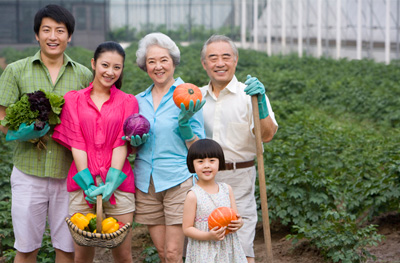

园艺技巧
-

温室升高花床和堆肥准备
升高花床适合布置在一些土壤贫瘠的院子，或者是有水泥地的露台上，另外如果加上一个玻璃盖子，就变成了一个温室花床，可以有效延长植物的生长期，对于植物越冬或蔬菜的栽培的帮助是非常大的。 制作花床并不一定就要用木板，用一些砖头或水泥块堆砌也是不错的选择。
如果你有一个院子，可以尝试堆肥，各种厨余垃圾、落叶、果皮和菜叶等，都能成为很好的堆肥材料，它们都是非常天然的物质，这样制作出来的堆肥是没有臭味的。 你还能在里面添加小树枝、蛋壳、咖啡渣、茶渣、干草等，不要放肉类、乳类制品。堆肥的过程中需要适当的搅拌，另外注意堆肥介质不能干燥，需要偶尔补水湿润。
-
检测土壤PH值和回收雨水
土壤的pH值对植物的生长是非常关键的，pH值就是衡量土壤酸碱性的，特别是喜欢微酸性土壤的植物，如果栽种在中性或弱碱性的土壤中，就很难开花，而且生长特别瘦弱，还容易挂掉。 在院子栽种比较多的植物之前，可以测试一下土壤的pH值，土壤偏碱可以添加堆肥土或硫酸亚铁改善，土壤偏酸，可以加些许石灰、草木灰改善。
下雨的时候将雨水收集起来，用来浇花是非常棒的，雨水是对植物生长促进做好的水了，比自来水或纯净水要好很多，属于软水。而自来水属于硬水，会挚爱植物的生长。 可以在屋檐下设置水管，之后用大容器储存起来，浇水的时候就能派上用场了。